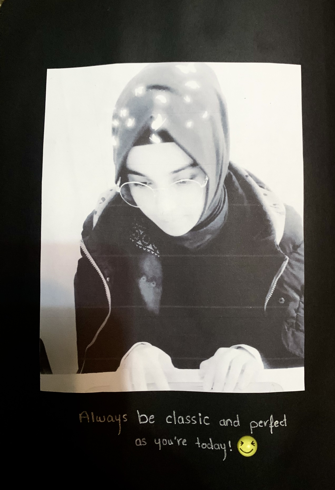
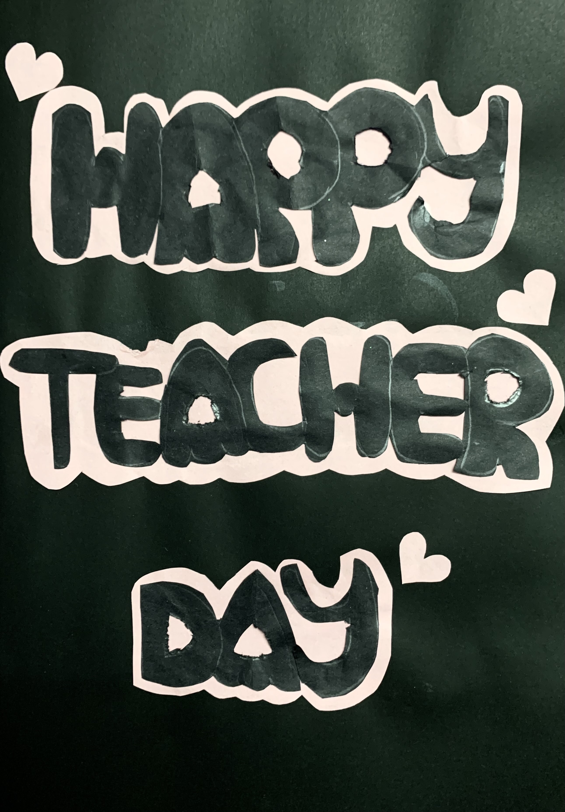
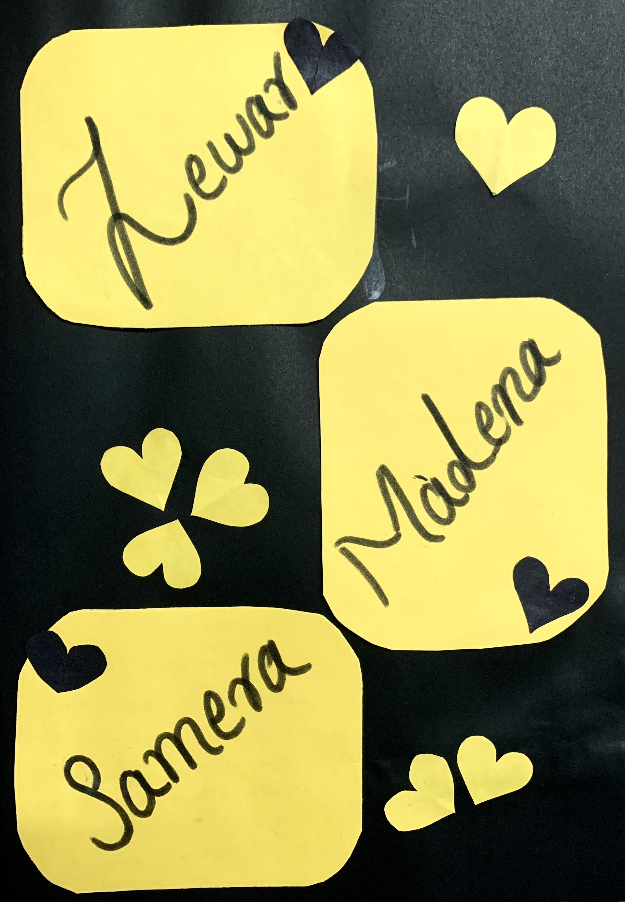
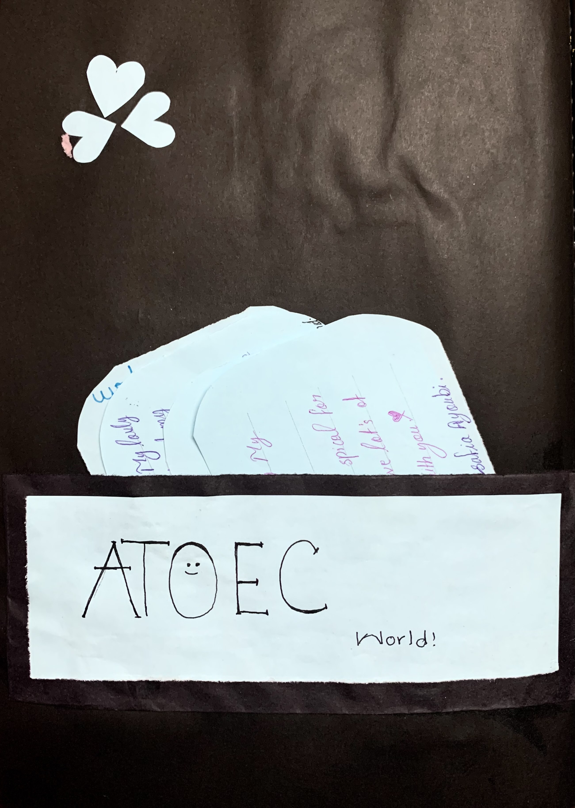

Happy Teacher's Day


Small Gifts from your Students
You deserve recognition for all the sacrifices that you make, you are more than a teacher to us and we THANK YOU! Today we celebrate you for being selfless, devoted, hardworking, and the wisest persons in the classroom. we are grateful to be your student. Happy Teacher’s Day! Admiration, devotion, education, inspiration and compassion are what you have. So we give you a toast to you, our teacher, because you deserve to be celebrated. Having a teacher like you is a blessing from above. Thank you for changing our world. Thank you for being our child’s second parent and a fantastic mentor. Happy Teachers Day! Wishing you joy and happiness, you are an amazing teacher, and you only deserve the best.You are the spark, the inspiration, the guide, the candle to our life. we am deeply thankful that you are our teacher.Even though our grades may not always be the best, we assure you that having you as our teacher makes us truly blessed. For now we know that you’ll never give up on us, Thank you for helping us be all we can be. Because of you we can see that our future is bright, Above all you taught us to shine forth our light. Happy Teachers Day our teacher! On this day we honor teachers like you, Who give of themselves in all that they do. So thank you our teacher for all that you gave, And we promise to try our best to behave! Warm wishes to the teacher who is a great example and who taught us so much. Thank you for giving your love and your 110%. Because of you a bright future is within our grasps. Thank you for inspiring us.
  
To continue up acheiving your gift as a hard book give us a hug😍😘🎉
ZÜHRE VARDAK
Here she is; Zühre Vardak from Afghanistan. She started her school in Afghan Turk Girls High School in 2007 ad and has graduated from school in 2012. Then, she has got the Kankor exam (entrance exam of university) and passed it successfully all by her personal and their Turkish trainers’ efforts. She has started her university life by entering the science Faculty (Biology) of KABUL UNIVERSITY in 2013 ad. Besides that, it was actually the start of her job life. It means that she has been introduced to Afghan Turk Omid Educational Center (ATOEC) as trainer and mentor. She has learnt a lot of things during her job; furthermore, she has taught the real path of living to her students. Since 2013 up to now she has been working for Humanitarian on the way of reaching Allah. Moreover, she has been teaching her students kindness and goodness, living elastically, being hopeful and strong in their life on the way of reaching their goals that Allah (SWT) has given them on the first day of the world. Zühre Vardak has taught her trainees to fly just like an Albatross on the surface of the big and terrible ocean of the world. Therefore, all the students of Zühre Vardak are really grateful to her for such hardworking. They all appreciate Zühre Vardak not only for just being thier teacher but also thier hero, abla and angel. Now, who are we? We are those girls that are really grateful to Zühre Vardak for changing thier life from left to right. We are those students of Afghan Turk Omid Educational Center (ATOEC) who learnt how to worship the God of the universe and how to be a good servant to thier Allah and thier community, how to write the book of thier life by themselves and fly like birds. We are publishing and presenting this webpage as a small gift in front of her efforts for us. We want form Zühre Vardak just to know how much she is valuable and what a sweet experience she put behind her for us!